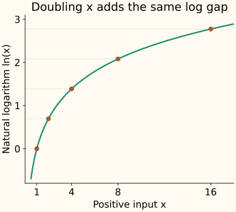

Log Transform
A logarithm turns ratios into differences. Moving from 1 to 2 and from 100 to 200 are both doublings. They have very different absolute gaps, but the same gap after a log transform. This makes a logarithm useful when relative changes better describe the task.
Large positive values become closer together on the log scale. That can make a long right tail easier to model or plot, but it does not automatically make a distribution normal or improve a prediction.
Understand the operation before applying it
The natural logarithm, written $\ln x$ and implemented by np.log(x), is the exponent that makes $e$ raised to that power equal $x$. Thus $\ln 1=0$ and $\ln e=1$. Its real-valued input must be positive.
For two positive inputs $a$ and $b$, the difference of their logarithms depends only on their ratio:
If $b=2a$, that difference is always $\ln 2\approx0.6931$. The sequence 1, 2, 4, 8, 16 therefore becomes approximately 0, 0.6931, 1.3863, 2.0794, 2.7726: equal doublings become equal increments.

The same addition matters less at a larger starting value
Adding 10 to 1 is a much larger relative change than adding 10 to 100. A log transform reflects that difference. Compare adding 10 with doubling the input:
| Change | New value | Raw gap | Log gap |
|---|---|---|---|
| Add 10 | 20 | 10 | 0.6931 |
| Double | 20 | 10 | 0.6931 |
Which relationships change, and which stay?
The logarithm is strictly increasing on positive inputs. It preserves their order and can be inverted using the exponential, but changes differences and ratios between distances. A model using Euclidean distance on logged features compares log-ratios rather than the original absolute gaps.
The base of the logarithm sets its units. For example, $\log_2x=\ln x/\ln2$. Changing between bases greater than 1 multiplies the log feature by a positive constant. It does not undo the nonlinear compression relative to the original input.
If the feature-target relationship is close to a straight line in log-input space, a linear predictor using that feature may fit better. Check that relationship and validate the resulting model. A prettier histogram alone is not evidence that the task improved.
Handle zero and negative inputs deliberately
The real logarithm is undefined at zero as a finite value and is not real-valued for negative inputs. In floating-point NumPy calculations, log(0) yields negative infinity and log(-1) yields NaN, with the corresponding warnings.
For nonnegative count-like inputs, one possible transform is log1p(x), which computes $\ln(1+x)$ accurately. It maps zero to zero and has inverse expm1(z), meaning $e^z-1$. It is a different transformation from $\ln x$, especially near zero.
Mathematically, log1p has finite real values for $x>-1$, including some negative inputs. The code below deliberately uses the narrower nonnegative domain appropriate to its example. It does not silently clip invalid observations.
Adding an arbitrary offset changes the meaning of relative differences. An offset selected from the training minimum must be saved and reused, and a smaller future value can still leave the valid domain. If meaningful negative values are expected, consider a transformation designed for them, such as Yeo–Johnson, rather than choosing an unexplained shift.
The “1” in log1p has a unit-dependent meaning
Fix the input unit before applying a transform. For a plain logarithm, changing positive units multiplies the input and therefore adds a constant on the log scale. With log1p, the added 1 changes its size relative to the measurement.
For example, a duration of 1 second is 1,000 milliseconds. Computing log1p on the numerical values 1 and 1,000 means adding one second in the first representation and one millisecond in the second. These transformations are not just a constant shift of one another across all durations. Document the unit and offset.
Use the stable functions and preserve the pipeline order
A fixed log transform learns no distribution parameters. It can still belong in a pipeline so that training and prediction follow the same order. Any fitted imputation, offset, or scaling around it must respect the training boundary.
Run log1p and its inverse on nonnegative features
import numpy as np
from sklearn.preprocessing import FunctionTransformer
# Policy for both training and future count-like features.
def nonnegative_log1p(X):
if not np.all(np.isfinite(X) & (X >= 0)):
raise ValueError("expected finite nonnegative inputs")
return np.log1p(X)
train = np.array([[0.], [1.], [9.], [99.]])
future = np.array([[3.], [999.]])
log_step = FunctionTransformer(nonnegative_log1p, inverse_func=np.expm1, validate=True)
log_step.fit(train)
print(log_step.transform(train).ravel().round(4).tolist())
print(log_step.transform(future).ravel().round(4).tolist())
np.testing.assert_allclose(log_step.inverse_transform(log_step.transform(train)), train)
print(np.log(1 + 1e-16), np.log1p(1e-16))
[0.0, 0.6931, 2.3026, 4.6052]
[1.3863, 6.9078]
0.0 1e-16The final line shows why the specialized function matters: forming 1 + 1e-16 first rounds it to 1 in ordinary double precision, while log1p retains the small change. validate=True checks the array representation. Our wrapper also enforces the nonnegative rule whenever it transforms training or future inputs.
Logging a target changes what a squared-error model estimates
Logging an input feature changes the model’s representation. Logging the target changes the scale on which errors are penalized. These are different decisions.
Suppose a positive target is equally likely to be 1 or 9. Its arithmetic mean is 5. Its mean log value is $(\ln1+\ln9)/2=\ln3$, whose exponential is 3. Exponentiating a mean log value does not generally recover a mean on the original scale.
A squared-error model trained on a logged target aims at a conditional mean in log space. Back-transforming can provide a useful point prediction, but estimating the original-scale mean requires accounting for the target’s distribution or transformation bias. The forecasting text’s transformation discussion develops that distinction. Evaluate errors on the scale that matches the task.
C++: define the domain and use log1p/expm1
These two functions implement the same nonnegative-feature policy. The inverse rejects invalid transformed inputs and detects overflow. They transform observed feature values; they do not correct the target-mean issue above.
Compile the forward and inverse transform
#include <cmath>
#include <iomanip>
#include <iostream>
#include <stdexcept>
double log_count(double x) {
if (!std::isfinite(x) || x < 0)
throw std::invalid_argument("finite nonnegative input required");
return std::log1p(x);
}
double restore_count(double z) {
if (!std::isfinite(z) || z < 0)
throw std::invalid_argument("expected transformed nonnegative input");
const double x = std::expm1(z);
if (!std::isfinite(x)) throw std::overflow_error("inverse overflow");
return x;
}
int main() {
std::cout << std::fixed << std::setprecision(4);
for (double x : {0.,1.,9.,99.}) {
const double z = log_count(x);
std::cout << x << " -> " << z << " -> " << restore_count(z) << "\n";
}
}
0.0000 -> 0.0000 -> 0.0000
1.0000 -> 0.6931 -> 1.0000
9.0000 -> 2.3026 -> 9.0000
99.0000 -> 4.6052 -> 99.0000References and further reading
- NumPy: log — the natural logarithm and real-input domain behavior.
- NumPy: log1p — stable evaluation near zero and the corresponding inverse.
- Hyndman and Athanasopoulos: forecasting using transformations — back-transformed forecasts, means, and transformation bias.
- Scikit-learn: FunctionTransformer — including a fixed mathematical transformation in an estimator pipeline.